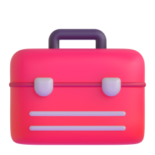

@mm.machine.ru01 / 07
8способовнеупиратьсявлимитClaudeCode


листай

Столько в среднем тратит разработчик в активный день при оплате по API, по данным Anthropic. У 90% меньше $30.


Улучши этот проект
Исправь баг в auth.ts: после логина не сохраняется сессия

Он грузится в каждую сессию. Редкие инструкции вынеси в скиллы, они подгружаются, только когда нужны.

